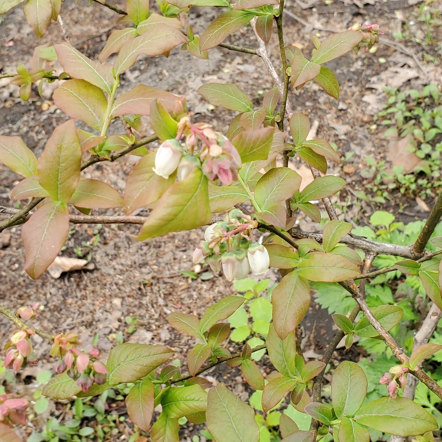

农作物与经济植物 · 植物界
蓝莓 Vaccinium corymbosum

蓝莓是杜鹃花科小灌木，果实蓝紫色、酸甜可口，富含花青素，可鲜食或加工果汁、果酱，是近年热门的功能性水果。
- 分类
- 门被子植物门纲双子叶植物纲目杜鹃花目科杜鹃花科属越橘属
- 栖息环境
- 酸性土壤的灌丛与沼泽边缘，喜光、喜湿但怕涝
- 地理分布
- 原产北美东部，现栽培于美国、智利、中国云南与山东等地
- 保护级别
- 暂无评估（栽培作物）
物种志
蓝莓是杜鹃花科落叶或常绿灌木，株高 0.5–2.5 m，枝条纤细，叶片卵形至披针形，秋季常转为红色。花钟形，白色或粉红色，下垂。果实为浆果，圆形，成熟时蓝紫色，表面覆一层白色果粉，果肉淡绿或白色，内含多数细小种子，根系为须根系，没有明显主根。
高丛蓝莓原产北美东部，20 世纪初开始人工选育，如今智利、美国、中国等地广泛栽培。它喜酸性土壤和充足光照，根系浅，怕旱怕涝，需用泥炭或松针改良土壤。果实成熟期在夏季，分批采收。蓝莓富含花青素和维生素，鲜食之外可制果汁、果酱、烘焙馅料；叶和果实也用于提取天然色素。中国云南、贵州、山东等地已形成规模化产区。
形态与习性
- 株高0.5–2.5 m，小灌木
- 土壤喜酸性，pH 4.5–5.5
- 花钟形，白或粉红色
- 果实蓝紫色浆果，有果粉
- 成熟期夏季，分批采收
- 用途鲜食、果汁与果酱
趣味知识
- 蓝莓表面的白霜是天然果粉，不是农药残留。
- 蓝莓根系浅，对土壤酸性和水分很敏感。
- 高丛蓝莓原产北美，是人工选育的重要栽培类型。